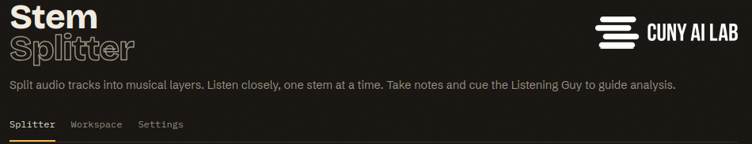
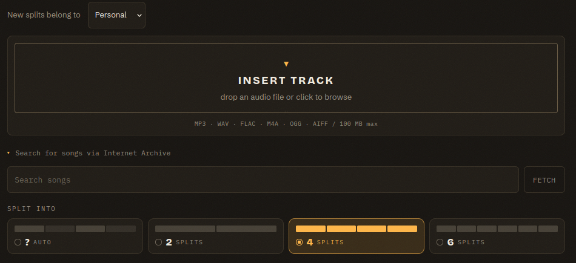

Getting Started
Join your instructor's course, sign in with CUNY Login, and make a first split. A familiar recording gives you a useful starting point because you can compare the stems with a song you already know.
Get Access
Students reach Stem Splitter through an instructor's course in the CUNY AI Lab. Instructors first request a course through the Lab's course application. After the Lab approves and activates the course, Stem Splitter appears under My classes in the Lab portal.
Instructors invite students through the Lab's class invitation. Students accept while the invitation window is open, then open Stem Splitter from My classes or sign in at stem-splitter.ailab-452.workers.dev. The app recognizes each member's course role. Lab members who have no course can also sign in and keep personal splits, which stay private to their accounts.
First Sign-In
Use the same CUNY Login you use for other CUNY services. Choose Sign in in the app, then complete any password or multi-factor prompt through CUNY Login. Use a recent browser with audio playback, such as Chrome, Firefox, Safari, or Edge. Headphones help when you share a room or need to hear a quiet part.
After sign-in, return to the Splitter tab. The masthead also gives you access to Workspace and Settings. Open Settings to see how many split runs and Listening Guy turns remain today.

Your First Split

Leave Share with set to Personal for your first try. You can learn the controls with a private recording before assigning new work to a course. Class Workspace explains the course policy and its acknowledgment.
Drop an audio file onto Insert Track, or click the drop zone to browse. The app accepts MP3, WAV, FLAC, M4A, OGG, and AIFF files up to 100 MB. You can also enter a title under Search for songs via Internet Archive or Wikimedia Commons, select a verified result, and press Fetch. Choose the provider with Audio source. Archive results contain public, downloadable MP3s that pass the app's duration and metadata checks. Wikimedia Commons adds recordings with verified public-domain, CC0, or CC BY recording rights. Their creator, license, and source credits stay with the recording and its exports. Use music you are entitled to use for class.
Auto is selected for a new session unless you have saved another valid choice. You can choose four stems for a comparison of vocals, drums, bass, and other sounds. A two-stem split groups the accompaniment into one instrumental stem; a six-stem split adds guitar and piano. The extra stems can contain parts of other instruments, so listen to each before relying on its label. Auto lets the app choose a split after it analyzes the imported audio.
The new recording appears in the Session Rack with a status badge. Wait for READY, then press play to hear the stems together. The separation service processes the audio on a GPU, and a typical song may take a minute or two. You can leave the page and return to check its progress.
Try Solo on the bass and listen for one minute. Clear the solo, replay the same minute with every stem, and notice how the bass relates to the other instruments. Then mute the bass and describe what changed. The Splitter Basics page explains the rack and the controls around the mixer.
Keep Listening
The Listening Guy guide offers questions you can test against the stems. Start with a claim about one instrument, hear that instrument alone, and pin a note at a passage that supports or challenges the claim.
Your personal work stays private to your account. When you create a course split, the policy you acknowledge determines what your instructor can review. The app deletes uploaded audio and stems after 90 days; Privacy & Limits explains retention and sharing in detail.